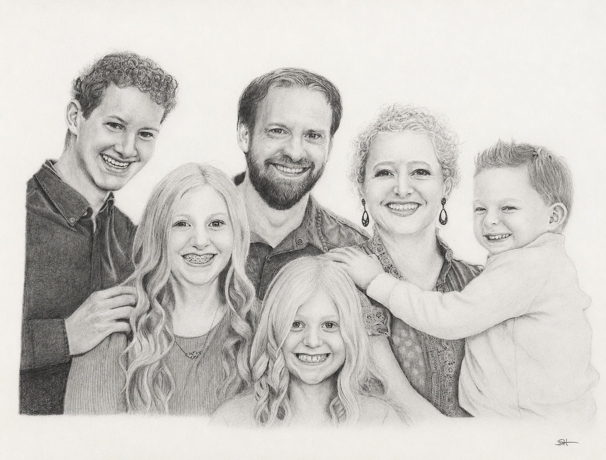
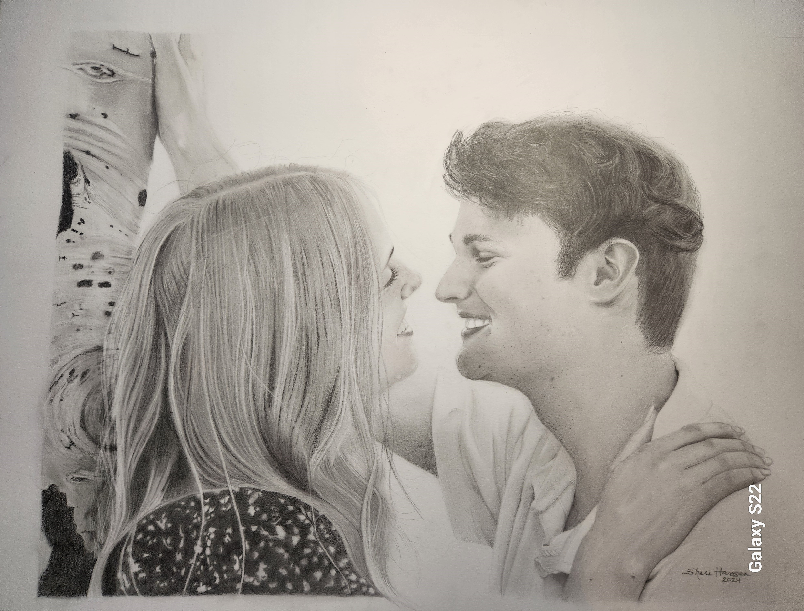
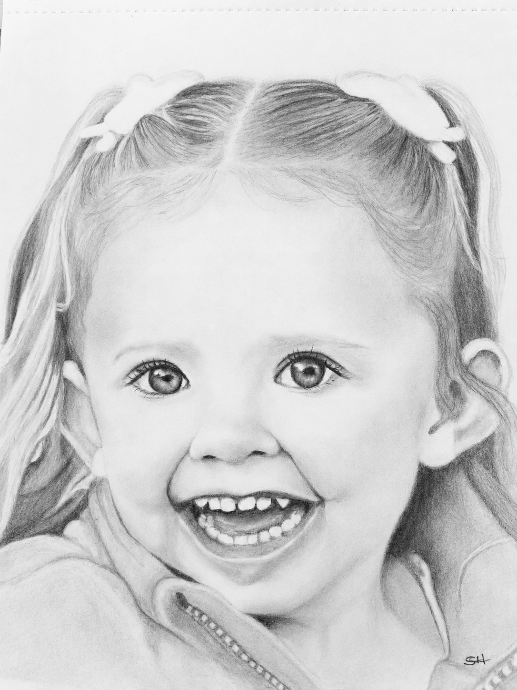
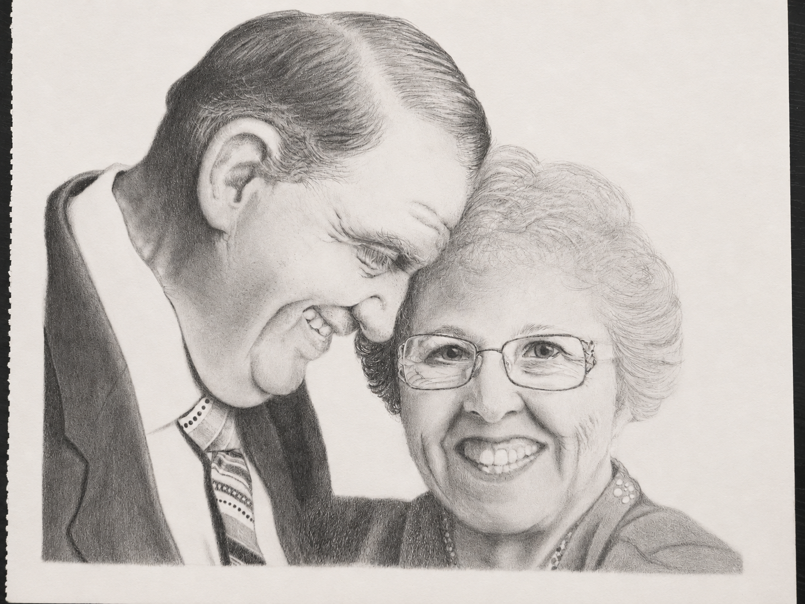

"She captured more than just a picture—it captured personality and emotion."
— Laura T.Custom Graphite Portraits
Because Some Memories Deserve More Than a Photograph
Custom graphite portraits that capture not only a likeness, but the personality, warmth, and spirit that make each person uniquely themselves.

Kind Words
Portraits Made to Be Treasured
"This was our favorite wedding gift! We were absolutely stunned by the level of detail and quality. It will always have a place in our home."
— Naia W.“You can actually feel the personalities that she portrays.”
— Mary H.Portfolio
Featured Portraits



About the Artist
More Than a Portrait
I believe every person is a gift. My goal is not simply to recreate a photograph, but to create a portrait that reflects the personality, warmth, and unique spirit of the individual.
Through careful attention to expression, detail, and the light in their eyes, I strive to preserve the memories and relationships that matter most.
Commission Process
How It Works
Start Your Inquiry
Fill out the commission form below and tell me about the person or memory you'd like preserved. I'll reply with photo guidelines and help you choose the strongest reference image.
Reserve Your Commission
Once details are confirmed, a 50% deposit reserves your place and begins the artwork.
Receive Your Portrait
Your finished portrait is carefully protected, packaged, insured, and delivered to your home, ready to preserve a treasured memory for generations.
Founding Collection
A Special Introductory Collection
To celebrate the launch of Sheri Hansen Portraits, I am opening a limited number of Founding Collection commissions at introductory pricing.
These early commissions help build my portrait studio while giving clients an opportunity to preserve someone they love through a custom hand-drawn portrait.
Limited availability • 50% deposit required to reserve your commission
Pricing
Portraits Starting At
8 × 10 Portrait
$200
Base portrait includes one subject
Additional subjects: +$50 each
Maximum 2 subjects
11 × 14 Portrait
$300
Base portrait includes one subject
Additional subjects: +$50 each
Maximum 3 subjects
16 × 20 Portrait
$400
Base portrait includes one subject
Additional subjects: +$50 each
Maximum 6 subjects
Begin Your Commission
Request a Portrait
Tell me about the person or memory you'd like preserved. After I receive your inquiry, I'll reach out to discuss your portrait, photo options, and pricing.